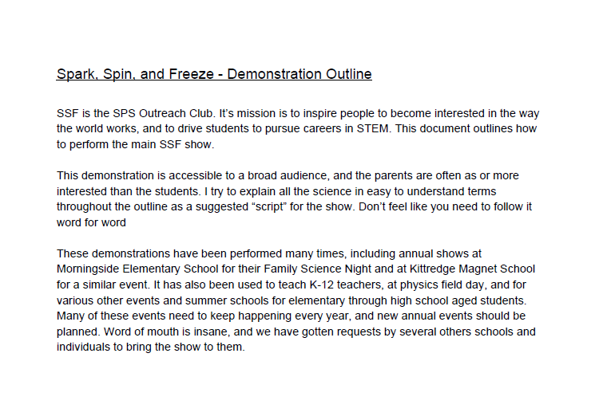

| Public Talks |
|
Busting Myths about Outer Space - Science Under the Dome at Fiske Planetarium
|
Interviews with Fiske Planetarium |
A view from Earth - Fiske Planetarium Interview (July 2020)
Extended Interview with Fiske Staff (July 2020)
|
NASA Explorations Interview (March 2019)
|
Outreach Activities and Documentation |

CU Boulder Junior Astronauts (2018)
-
Lesson Plans for Afterschool program for Elementary Schoolers
|

Spark, Spin, and Freeze (2013 - 2015)
-
Physics demonstration show for all ages
|